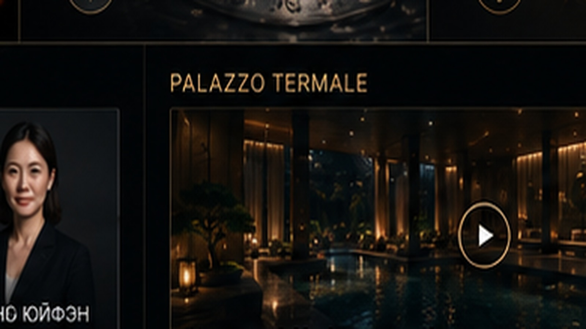

01
Влажно-паровая ингаляция
Термальная вода фракционируется на мелкие частицы для воздействия на слизистые верхних дыхательных путей.
10–12 мин6–12 процедур
1 900 ₽
Термальные источники у Вас дома!
Термальный курорт и ингаляционное отделение в центре Москвы: гидропинотерапия, ингаляции, аэрозоль, микронизированный носовой душ и природные минеральные воды.
Проект объединяет термальный курорт на Арбате, ингаляционное направление, питьевое лечение природными минеральными водами, оборудование для ингаляториев, обучение, международный профессиональный обмен и клинические наблюдения.
Оздоровительно-профилактические программы в центре Москвы.
02Влажно-паровая ингаляция, аэрозоль и микронизированный носовой душ.
03Питьевые курсы природных минеральных вод.
04Ингаляционные модули и устройства для домашнего использования.
05Международная программа наблюдений минеральной воды Telese.
06Специалисты термализма, реабилитации, минеральных вод и wellness.
07Стажировки, семинары и обмен опытом на термальных курортах.
08Вода как часть гастрономии, сервиса и event-форматов.

Оздоровительный центр, где представлены классические направления термального курорта и ингаляционного отделения.
Профилактика и реабилитация проводятся на ингаляционном оборудовании производства Италии с природной минеральной лечебно-столовой водой. Перед курсом рекомендуется консультация специалиста.
Термальная вода фракционируется на мелкие частицы для воздействия на слизистые верхних дыхательных путей.
Мелкие частицы термальной воды достигают верхних и нижних дыхательных путей.
Процедура с одноразовой ампулой RINO-JET для промывания и очищения слизистых носовой полости, гортани и носоглотки.
Питьевое лечение минеральными водами — один из основных методов курортного лечения заболеваний органов пищеварения, печени, почек и нарушений обмена веществ.
Вид воды, объём и схема приёма зависят от состава минеральной воды, состояния и медицинских назначений. На сайте Palazzo Termale опубликованы научные руководства по Telese, Acqua Santa di Chianciano и материалам Монтекатини Терме.
Природная лечебно-столовая углекислая сероводородная бикарбонатная кальциевая магниевая вода. На сайте опубликовано отдельное научное руководство.
О воде →Природная лечебно-столовая вода Кьянчано Терме. Для неё также опубликовано отдельное научное руководство.
О воде →Природная минеральная вода из Франции, представленная в ассортименте Palazzo Termale.
О воде →Биологически активная добавка на основе Acqua Santa di Chianciano с экстрактами лекарственных растений.
Подробнее →Слегка игристый яблочный сок Эрика Бордоле из Нормандии, представленный в ассортименте проекта.
Подробнее →Palazzo Termale проектирует, поставляет, устанавливает и обслуживает ингаляционное оборудование, а также проводит обучение по внедрению современных ингаляционных методик.
На странице термального курорта на Арбате представлены российские специалисты Palazzo Termale и эксперты итальянских термальных курортов.
Доктор медицинских наук. Директор Института обоняния и ольфакторной патологии, оториноларинголог высшей категории.
Медицинский директор проекта Palazzo Termale, к.м.н., ведущий научный сотрудник ФГБУ «НМИЦ РК» Минздрава России.
Медицинский директор Terme di Telese.
Врач-хирург со специализацией в термализме, лечебном питании и эстетической медицине.
Медицинский советник Palazzo Termale, врач и эксперт по вопросам медицинского и wellness-туризма.
Заведующая отделением физиотерапии и лечебной физкультуры, врач-физиотерапевт.
Международная инициатива экспертного сообщества Palazzo Termale и Terme di Telese по изучению применения природной сероводородной минеральной воды Telese.
К участию приглашаются врачи, нутрициологи, специалисты превентивной медицины, реабилитации и wellness-практик. Среди направлений наблюдений — стоматология, ЛОР-практика, гастроэнтерология, дерматология, метаболические состояния и превентивная практика.
Программа клинических наблюдений →Сообщество объединяет врачей, нутрициологов, специалистов превентивной медицины, реабилитации, курортной медицины, бальнеологии и wellness-индустрии, которые исследуют и применяют минеральные воды и природные источники.
На сайте Palazzo Termale представлены образовательные программы, профессиональный обмен и материалы о ведущих итальянских термальных курортах.
Питьевая терапия, гидромассажные ванны, грязи и другие направления курортного лечения.
Подробнее →Исторический итальянский термальный курорт, связанный с применением сероводородных минеральных вод.
Подробнее →Один из известных европейских бальнеологических курортов; на сайте опубликованы описание и прайс 2026 года.
Подробнее →Термальный парк на Искье, представленный среди итальянских партнёров проекта.
Подробнее →Стажировка с МИИН, поток 3, в Монтекатини Терме (Италия).
Авторская концепция Palazzo Termale, представленная на White Wedding Awards 2025: подбор воды по минерализации, температуре и роли в ужине. Формат предназначен для ресторанов fine dining, отелей и курортов, private events, кейтеринга и wellness-пространств.
В интернет-магазине Palazzo Termale представлены природные минеральные воды из Италии, ирригаторы, системы для промывания носа и термальная продукция.
Перейти в магазинНа территории Института Восточной Традиционной Медицины · м. Арбатская · м. Кропоткинская.